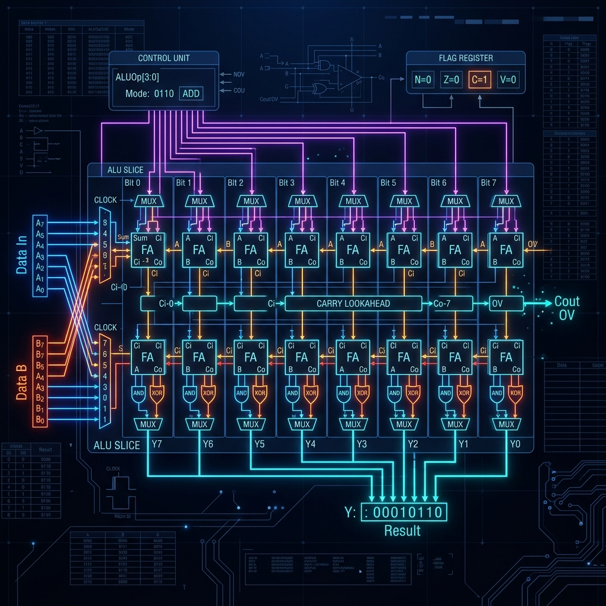

Welcome back to our ongoing series, Building an 8-bit Computer from Scratch. In Part 1, we established the foundational clock and timing circuits. In Part 2, we delved into the intricacies of basic logic gates and flip-flops. In Part 3, we constructed the registers and Random Access Memory (RAM) needed to hold our computer's state. Now, in Part 4, we arrive at the very mathematical heart of the CPU: the Arithmetic Logic Unit, or ALU. If the clock is the heartbeat and the RAM is the memory, the ALU is the calculating brain of the processor.
1. What is an ALU?
An Arithmetic Logic Unit (ALU) is a combinational digital circuit that performs arithmetic and bitwise operations on integer binary numbers. This is in contrast to a floating-point unit (FPU), which operates on floating-point numbers. It is a fundamental building block of many types of computing circuits, including the central processing unit (CPU) of computers, FPUs, and graphics processing units (GPUs). A single CPU, FPU or GPU may contain multiple ALUs.
The inputs to an ALU are the data to be operated on, called operands, and a code indicating the operation to be performed; the ALU's output is the result of the performed operation. In many designs, the ALU also takes or generates as inputs or outputs a set of condition codes from or to a status register or flag register. These codes are used to indicate cases such as carry-in or carry-out, overflow, division by zero, etc.
2. The Architecture of Our 8-Bit ALU
For our 8-bit computer, we are designing a relatively straightforward ALU. It will take two 8-bit inputs, which we will call A and B. It will output one 8-bit result, which we will call Out. It will also output a few flag bits: Carry (C) and Zero (Z).
Our ALU will be capable of performing the following operations, selected by a 3-bit control signal (which we will refer to as Opcode or ALU_SEL):
- 000: Addition (A + B)
- 001: Subtraction (A - B)
- 010: Bitwise AND (A & B)
- 011: Bitwise OR (A | B)
- 100: Bitwise XOR (A ^ B)
- 101: Bitwise NOT A (~A)
- 110: Shift Left (A << 1)
- 111: Shift Right (A >> 1)
3. Deep Dive into Addition: The Full Adder
The core of any ALU is the adder. Before we can add 8-bit numbers, we must understand how to add 1-bit numbers. A Half Adder takes two 1-bit inputs (A and B) and produces a Sum and a Carry. However, when chaining adders together, we need to account for the carry coming from the previous bit. This requires a Full Adder, which takes three inputs: A, B, and Carry-In (Cin).
The boolean logic for a Full Adder is as follows:
- Sum = A XOR B XOR Cin
- Carry-Out (Cout) = (A AND B) OR (Cin AND (A XOR B))
To build an 8-bit adder, we simply chain 8 Full Adders together in a configuration known as a Ripple Carry Adder. The Cout of bit 0 is connected to the Cin of bit 1, and so on. While simple, a Ripple Carry Adder is slow because the carry must "ripple" through all 8 bits. In modern CPUs, Carry Lookahead Adders are used to calculate the carry bits in parallel, drastically speeding up addition. However, for our educational 8-bit CPU, the Ripple Carry approach provides an excellent balance of simplicity and functionality.
4. The Magic of Subtraction: Two's Complement
How do we subtract binary numbers using logic gates? Do we need a separate "Subtractor" circuit? Fortunately, no. By utilizing a mathematical trick called Two's Complement, we can use our existing addition circuit to perform subtraction.
In Two's Complement, the negative of a binary number is obtained by inverting all its bits (changing 0s to 1s and 1s to 0s) and then adding 1. So, A - B is equivalent to A + (~B) + 1.
To implement this in our ALU, when the Subtraction operation is selected, we pass the B input through an array of XOR gates. One input of the XOR gate is the B bit, and the other is the SUB signal. When SUB is 0, B passes through unchanged. When SUB is 1, B is inverted. We also connect the SUB signal directly to the Carry-In of the very first Full Adder. This effectively adds the +1 required for Two's Complement. Thus, with only a few extra XOR gates, our Adder becomes an Adder/Subtractor.
5. Bitwise Logic Operations
Compared to addition and subtraction, bitwise logic operations are incredibly simple to implement. For an 8-bit AND operation, we simply use eight 2-input AND gates, connecting A[0] and B[0] to the first, A[1] and B[1] to the second, and so on. We do the exact same thing for OR and XOR, using arrays of OR and XOR gates.
The NOT A operation only requires one input, so we use an array of 8 inverters (NOT gates) connected to the A input.
6. Routing Data: The Multiplexer
Now we have circuits that can calculate A+B, A-B, A AND B, A OR B, etc. The problem is, they are all calculating these results simultaneously all the time! How do we select which result actually makes it to the final Output of the ALU?
The answer is a Multiplexer (MUX). A MUX is a digital switch. Our ALU requires an 8-to-1 MUX for each of the 8 bits of the output. This MUX takes the 8 different possible results for a single bit, along with our 3-bit ALU_SEL signal, and routes only the selected result to the output.
Internally, an 8-to-1 MUX is built using AND, OR, and NOT gates. It decodes the 3-bit select signal to enable exactly one of the 8 input channels to pass through to the output.
7. The 1-Bit ALU Slice
When designing an 8-bit ALU, it is often easier to design a "1-bit ALU Slice" and then duplicate it 8 times. A 1-bit ALU slice contains a 1-bit Full Adder, the logic gates for AND, OR, and XOR, and an 8-to-1 MUX to select the final output for that single bit.
Below is the SQGATE JSON representation of a conceptual 1-Bit ALU Slice. You can load this directly into the SQGATE Simulator to see it in action.
{
"version": "1.0",
"name": "1-Bit ALU Slice",
"components": [
{"type": "Input", "id": "A", "label": "A", "x": 100, "y": 100},
{"type": "Input", "id": "B", "label": "B", "x": 100, "y": 150},
{"type": "Input", "id": "Cin", "label": "Cin", "x": 100, "y": 200},
{"type": "Input", "id": "SUB", "label": "SUB", "x": 100, "y": 250},
{"type": "Input", "id": "S0", "label": "S0", "x": 100, "y": 300},
{"type": "Input", "id": "S1", "label": "S1", "x": 100, "y": 350},
{"type": "Input", "id": "S2", "label": "S2", "x": 100, "y": 400},
{"type": "XOR", "id": "B_XOR_SUB", "x": 200, "y": 150},
{"type": "FullAdder", "id": "FA1", "x": 300, "y": 125},
{"type": "AND", "id": "AND1", "x": 300, "y": 250},
{"type": "OR", "id": "OR1", "x": 300, "y": 300},
{"type": "XOR", "id": "XOR1", "x": 300, "y": 350},
{"type": "NOT", "id": "NOT_A", "x": 300, "y": 400},
{"type": "Multiplexer8", "id": "MUX1", "x": 500, "y": 250},
{"type": "Output", "id": "Out", "label": "Result", "x": 650, "y": 250},
{"type": "Output", "id": "Cout", "label": "Cout", "x": 650, "y": 150}
],
"wires": [
{"from": "B", "to": "B_XOR_SUB:in1"},
{"from": "SUB", "to": "B_XOR_SUB:in2"},
{"from": "A", "to": "FA1:A"},
{"from": "B_XOR_SUB", "to": "FA1:B"},
{"from": "Cin", "to": "FA1:Cin"},
{"from": "A", "to": "AND1:in1"},
{"from": "B", "to": "AND1:in2"},
{"from": "A", "to": "OR1:in1"},
{"from": "B", "to": "OR1:in2"},
{"from": "A", "to": "XOR1:in1"},
{"from": "B", "to": "XOR1:in2"},
{"from": "A", "to": "NOT_A:in"},
{"from": "FA1:Sum", "to": "MUX1:in0"},
{"from": "FA1:Sum", "to": "MUX1:in1"},
{"from": "AND1", "to": "MUX1:in2"},
{"from": "OR1", "to": "MUX1:in3"},
{"from": "XOR1", "to": "MUX1:in4"},
{"from": "NOT_A", "to": "MUX1:in5"},
{"from": "S0", "to": "MUX1:S0"},
{"from": "S1", "to": "MUX1:S1"},
{"from": "S2", "to": "MUX1:S2"},
{"from": "MUX1", "to": "Out"},
{"from": "FA1:Cout", "to": "Cout"}
]
}
8. Generating the Flags: Carry and Zero
An ALU's job isn't just to calculate the result; it must also communicate the properties of that result back to the CPU control unit. This is done via the Flags register.
The Carry Flag (C) is extremely simple. It is merely the Carry-Out (Cout) of the very last Full Adder in the 8-bit chain (bit 7). If an addition overflows 8 bits (e.g., 255 + 1), the Carry Flag will be set to 1. This flag is critical for multi-byte arithmetic (like adding 16-bit numbers using our 8-bit ALU).
The Zero Flag (Z) indicates whether the final 8-bit result of the ALU is entirely zeros. To generate this flag, we take all 8 bits of the ALU output and feed them into a massive 8-input NOR gate. If any bit is 1, the NOR gate outputs 0. Only if all 8 bits are 0 will the NOR gate output 1. The Zero flag is essential for conditional branching (e.g., branching if a subtraction resulted in zero, meaning the two numbers were equal).
9. The Critical Path and Timing Considerations
When designing an ALU from discrete logic gates, one must be aware of the 'critical path'. This is the longest sequence of gates a signal must pass through from the inputs to the final output. In a ripple-carry ALU, the critical path is the carry signal rippling from bit 0 all the way to bit 7, and then propagating through the final multiplexer.
Every gate introduces a small propagation delay. If the clock cycle is shorter than the delay of the critical path, the ALU will output garbage data because the signals won't have had enough time to stabilize. Therefore, the maximum clock speed of our 8-bit computer is largely dictated by the propagation delay of our ALU's ripple carry chain.
10. Conclusion
We have successfully designed a fully functional 8-bit Arithmetic Logic Unit capable of addition, subtraction, bitwise logic, and flag generation. By understanding the underlying Boolean algebra and utilizing clever techniques like Two's Complement, we've reduced complex mathematical operations into a network of simple interconnected logic gates.
In Part 5, we will take our ALU, our Registers, and our Memory, and connect them all together via a central Bus system. We will then design the Instruction Decoder, the conductor of the orchestra, which will read instructions from memory and generate the precise control signals (like ALU_SEL and SUB) required to execute them.